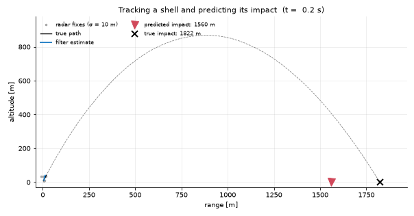

|
Kalman World
1.0.0-2-g101bd0d
State estimation, dynamical systems and predictive learning 🛰️📈
|
A projectile under gravity and air drag, followed by a sensor that measures its position. The filter recovers the velocity, which no sensor measures, and from it the apex and the point of impact.

Gravity is a constant g along z near the ground. With g=None it becomes the pull of a central mass, -G M p / |p|³, for an orbit.
Two classes share this domain:
| Class | What it is | Filter |
|---|---|---|
BallisticLinearModel | constant acceleration, no drag: the motion is linear | linear Kalman filter |
BallisticModel | gravity and drag: the drag term is nonlinear in the velocity | extended Kalman filter |
DYNAMICS = CONTINUOUS): f returns the rate of change from the forces (gravity, drag, thrust) and the framework's integrator steps them: RK4 by default, or any other through integrator= (KalmanIntegratorKind.EULER, a DormandPrinceIntegrator(...), a scheme of your own). substeps=N takes N integrator steps per sample, and substeps="auto" picks N from the orbital period. On a 2.2 h orbit sampled every 86 s, one RK4 step is 0.06 m off the exact circle; the hand-written step this replaced was 283 m off.process_uncertainty is q in m/s^1.5: left alone, the velocity wanders by q √t. It stands for what the model leaves out, such as wind.BallisticModel has a twin in libKalmanApps (Kalman::Apps::Ballistics::Ballistic). With the default single step the whole filter runs there, about 30 to 40 times faster. Sub-stepping, a speed-dependent process noise and a thrust input keep the Python step.Notebook: 01_Ballistics.